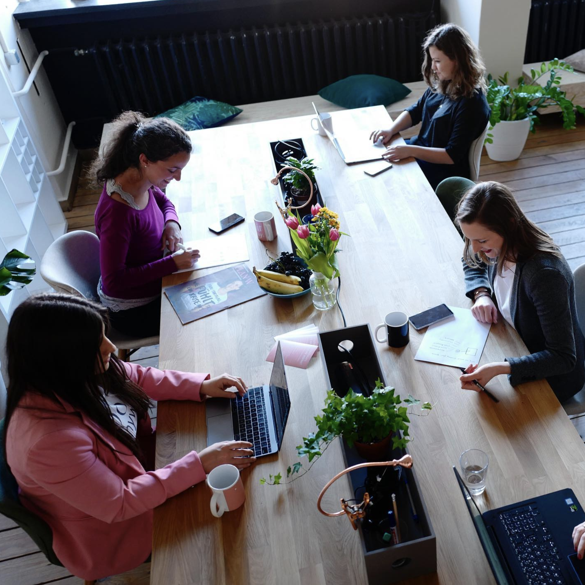
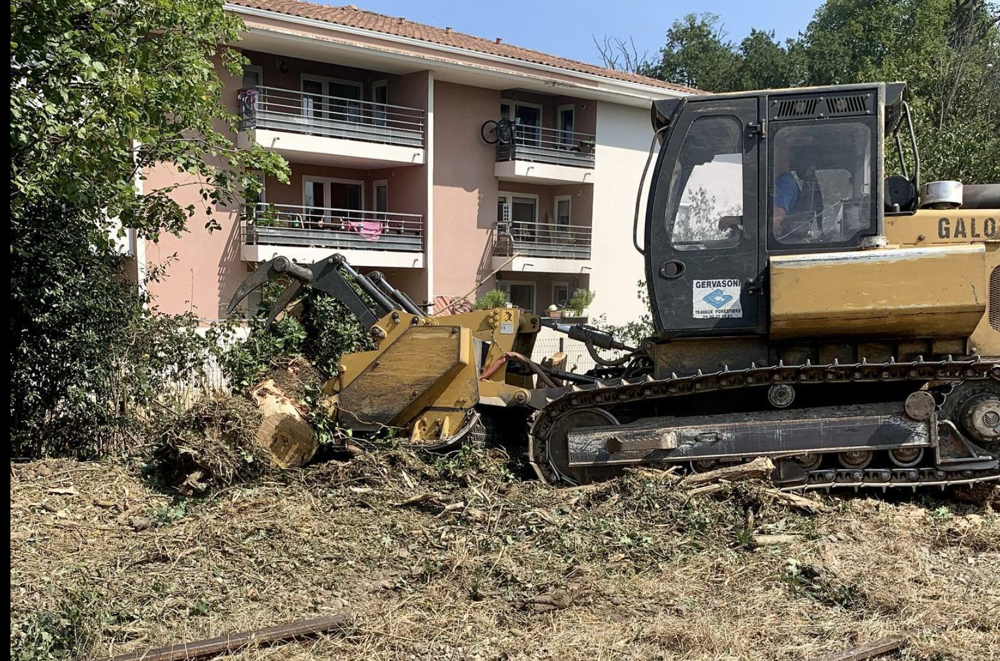

Compte Instagram de l'Entreprise
J'ai eu la responsabilité de mettre en place le compte Instagram de l'entreprise, un rôle clé dans la stratégie de médias sociaux.

Observation et Expérience Professionnelle
Cette expérience m'a également permis d'observer de nombreux aspects du métier de paysagiste, enrichissant ainsi mes compétences et ma compréhension du domaine.

Travail sur le Terrain
Mon stage m'a offert une occasion unique de travailler directement sur des projets de paysagisme. Voici quelques tâches que j'ai accomplies :
- Conception de jardins : J'ai aidé à créer des plans pour de nouveaux jardins, en choisissant des plantes et des dispositions qui correspondent à l'esthétique souhaitée.
- Plantation et entretien : J'ai planté de nouvelles fleurs, arbres et arbustes, et je me suis occupé de l'entretien général, y compris l'arrosage, la taille et la lutte contre les maladies.
- Collaboration avec les clients : J'ai eu l'opportunité de rencontrer des clients pour discuter de leurs besoins et souhaits, et j'ai travaillé en étroite collaboration avec eux tout au long du projet.
- Photographie : J'ai pris des photos de nos projets finis pour les utiliser sur le compte Instagram de l'entreprise, en mettant en valeur notre travail de haute qualité.

Compétences Acquises
Au cours de mon stage, j'ai acquis un certain nombre de compétences importantes dans le domaine du paysagisme :
- Compréhension des principes de conception du paysage, y compris l'équilibre, le contraste et l'harmonie.
- Capacité à travailler avec divers outils et équipements de jardinage.
- Compétence dans la gestion des médias sociaux, y compris la création de contenu visuellement attrayant et engageant pour Instagram.
- Aptitude à communiquer efficacement avec les clients et l'équipe, en comprenant et en répondant aux besoins de chaque projet.